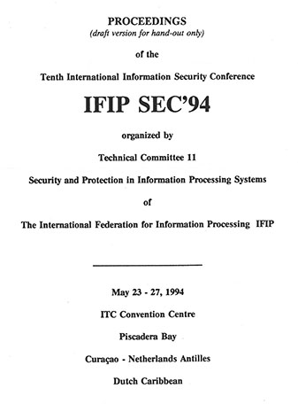

IFIP TC11 Information Security & Privacy Conference (SEC)
Past conferences
SEC conferences are the flagship events of the International Federation for Information Processing (IFIP) Technical Committee 11 (TC11) on Information Security and Privacy Protection in Information Processing Systems. Proceedings from this conference series can be found through our publisher Springer under the International Conference on ICT Systems Security and Privacy Protection series.
Please reach out if you have any information in relation to our historic events to help complete our records.
View our past conference series:
2025+ (40th+) | 2015-2024 (30th-39th) | 2005-2014 (20th-29th) | 1994-2004 (10th-19th) | 1983-1993 (1st-9th)

10th Conference, Curaçao, Dutch Carribbean, 23-27 May 1994
Proceedings
-
51 papers
The proceedings for the 1994 conference were scheduled to be published through North-Holland (later Elsevier) but never completed. Below is a list of papers taken from the 'delegate handout' - we are currently seeking permission from authors to include links to the PDF copies of each paper. If you are one of the authors below, please contact us as we need your approval before linking the papers for public access.
A few papers were archived online via the old TC11 website.
The following papers appear in the order as presented in the handout.
-
Nikolai Bezroukov
Computer Crime in the Ukraine
-
William J. Caelli & John M. Carroll
A Comparison of International Information Security Standards Based on Documentary Micro-Analysis
-
Wayne Madsen
Privacy Aspects of Data Travelling Along the New Highway
-
Philip Zimmermann
The Politics of Pretty Good Privacy
-
N. Balasubramanian
Computer Based Cryptanalysis: Man vs Machine Approach
-
Thomas Beth & Dieter Gollmann
Security Systems Based on Exponentiation Primitives
-
Sead Muftic, Nada Kapidzic & Alan Davidson
The Structure and Functioning of the Cost Privacy Enhanced Mail (PEM) System
-
Heba K. Aslan, Mahmoud T. El-Hadidi & Nadia H. Hegazi
Secure Communication in LANs Using a Hybrid Encryption Scheme
-
Burkhard Lau & Waltraud Gerhardt
A Decentralized Approach for Authorization
-
Wolfgang Mayerwieser & Reinhard Posch
Prohibiting the Exchange Attack Calls for Hardware Signature
-
Thomas Hardjono, Yuliang Zheng & Jennifer Seberry
Anonymous and Verifiable Databases: Towards a Practical Solution
Linked to institutional repository
-
Frank Stoll
The Need for Decentralization and Privacy in Mobile Communications Networks
Published in Computers and Security, vol. 14, iss. 6, pp527-539
-
Ir. Paul L. Overbeek
Towards Secure Open Systems
-
Jaap den Engelsman, Martin de Graaf, Paul Overbeek, Hans Schoone & Leon Strous
Security Evaluation Criteria - Position Paper
This paper is a position paper on security evaluation criteria. The paper was prepared by Jaap den Engelsman, Martin de Graaf, Paul Overbeek, Hans Schoone and Leon Strous, members of working group SB.W06 Security Evaluation Criteria of the Special Interest Group on Information Security (SIGIS) of the Dutch Computer Society (NGI). During the process of preparing this paper the authors were supported by the other members of this working group. The final draft was reviewed by members of the Technical Committee on Security and Protection in Information Processing Systems (TC-11) of the International Federation for Information Processing (IFIP). The paper was adopted in May 1994 as a formal policy statement / position paper by IFIP TC-11.
-
Ralph Hauser & Stefano Zatti
Security, Authentication and Policy Management in Open Distributed Systems
-
Sharon Fletcher
The Risk-Based Information System Design Paradigm
-
Peter Fillery & A.N. Chantler
Is Lack of Serious Acceptance and Application of Software Quality Assurance Principles a Password to Information Security Problems?
-
Jean Hitchings
The Need for A New Approach To Information Security
-
Jingsha He
Program Structure for Secure Information Flow
-
Paul Spirakis, Sokratis Katsikas, Dimitris Gritzalis, Francois Allegre, Dimitris Androutsopoulos, John Darzentas, Claude Gigante, Dimitris Karagiannis, Heiki Putkonen & Thomas Spyrou
SECURENET: A Network-Oriented Intelligent Intrusion Prevention and Detection System
-
Elaine Palmer
An Introduction to Citadel: A Secure Crypto Co-Processor for Workstations
-
Stefan Santesson
An Open Architecture for Security Functions In Workstations
-
Dimitris Gritzalis, Sokratis Katsikas & John Darzentas
A High Level Security Policy for Health Care Establishments
-
Barry Barber, Paul Skerman, Ab Bakker & Stellen Bengtsson
Security Issues Within the Health Care Environment
-
Donald G. Marks, Leonard J. Bins, Peter J. Sell & John R. Campbell
Security Considerations of Content and Context Based Access Controls
-
Günther Pernul & A.M. Tjoa
Evaluation of Policies, State-Of-The-Art, and Future Research Directions in Database Security
-
Jeanette Ohlsson
The Security Process
-
Love Ekenberg, Subhash Oberoi & István Orci
A Cost Model for Managing Information Security Hazards
Published in Computers and Security, vol. 14, iss. 8, pp707-717
-
Jon Ølnes
Development of Security Policies
-
Rolf Oppliger & Dieter Hogrefe
Security Concepts for Corporate Networks
-
Muninder Kailay & Peter Jarratt
RAMeX: A Prototype Expert System for Computer Security Risk Analysis and Management
Published in Computers and Security, vol. 14, iss. 5, pp449-463
-
Bruno Studer
Secure Network Management
-
Andre Van Der Veen, D.P. de Jong, J.F. Bautz, N. Yousef Yengej, A.M.J. van Kempen & P.P.A. van Dam
Smart: Structured Multi-Dimensional Approach to Risk Taking for Operational Information Systems
-
Fred De Koning
A Methodology for the Design of Security Plans
Published in Computers and Security, vol. 14, iss. 7, pp633-643
-
Ross Paul
Issues In Designing and Implementing a Practical Enterprise Security Architecture
-
Pauli Vahtera & Heli Salmi
Security in EDI Between Bank and Its Client
-
Helen J. James & Patrick J. Forde
A Framework for Information System Security Management
-
John Palmer & Alex S.W. Lee
Investigation of Factors Affecting the Decision to Report Occurrences of Computer Abuse in Western Australian Organisations
-
Pieter Van Zyl, M.S. Olivier & S.H. von Solms
Moss: A Model for Open System Security
-
Ralph Holbein
Secure Information Exchange in Organisations
-
James Backhouse and Gurpreet Dhillon
Corporate Computer Crime Management: A Research Perspective
-
Amund Hunstad
Security in Virtual Reality: Virtual Security
-
Sarah Gordon
Technologically Enabled Crime: Shifting Paradigms for the Year 2000
Best paper award.
-
Henry B. Wolfe
Viruses: What Can We Really Do?
-
Vesselin V. Bontchev
Future Trends in Virus Writing
-
Yisrael Radai
Integrity Checking For Anti-Viral Purposes - Theory and Practice
-
Padgett Peterson
Securing the Perimeter: Practical Aspects of the Fortress
-
Winn Schwartau
Information Warfare: Waging and Winning Conflict in Cyberspace
Additional Paper (not in delegate handout contents list)
-
Lam For Kwok & Dennis Longley
A Security Officer's Workbench
Invited Speakers
-
N Balasubramanian
Computer Based Cryptanalysis: Man vs Machine Approach
-
Ken van Wyk
Estabishing a CERT: Computer Emergency Response Team
-
Wayne Madsen
Privacy Aspects of Data Travelling Along the New Highway
-
Ross Paul
Issues in Designing and implementing a Practical Enterprise Security Architecture
-
Winn Schwartau
Information Warfare: Waging and Winning Conflict in Cyberspace